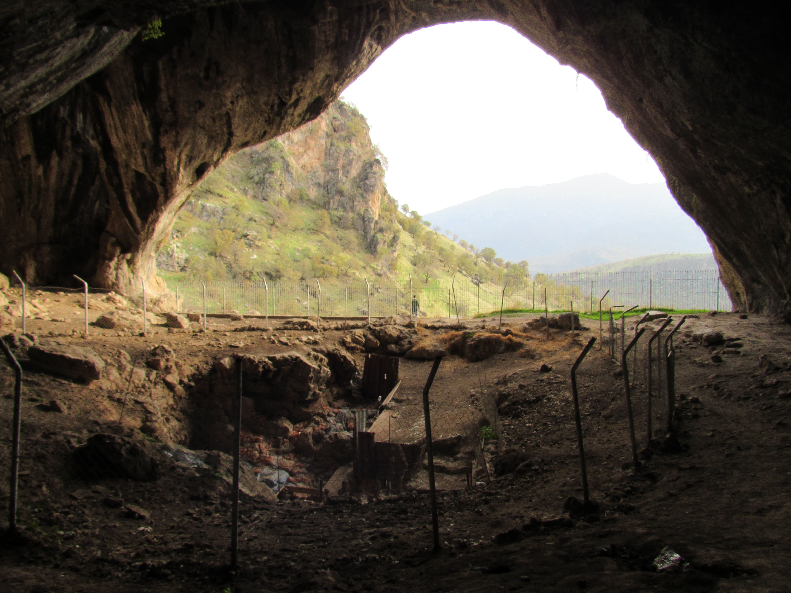
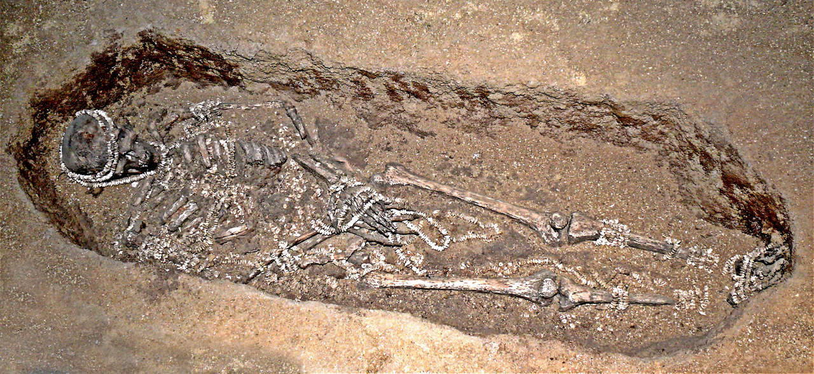

Si los sapiens honraban a sus muertos, ¿lo hacían también los neandertales? La respuesta toca una de las preguntas más cargadas de toda la prehistoria: qué nos hace humanos.
En la entrega anterior vimos que hace cien mil años los Homo sapiens de Qafzeh enterraban a sus muertos con ocre y ofrendas. Pero los sapiens no eran los únicos humanos sobre la Tierra. Compartieron el mundo con los neandertales, una especie hermana tan inteligente y tan antigua como nosotros. Y la pregunta de si ellos también enterraban a sus muertos con intención ha sido uno de los debates más intensos —y más reveladores— de la arqueología.
En los años cincuenta y sesenta, el arqueólogo Ralph Solecki excavó la cueva de Shanidar, en los montes Zagros del Kurdistán iraquí. Allí encontró los restos de al menos diez neandertales. Algunos habían muerto por el desprendimiento del techo de la cueva. Pero otros parecían haber sido colocados deliberadamente, y uno de ellos cambiaría para siempre la imagen que teníamos de esta especie.

El esqueleto conocido como Shanidar 4 estaba rodeado de granos de polen agrupados en el sedimento. La palinóloga Arlette Leroi-Gourhan propuso una idea deslumbrante: esos grumos de polen eran los restos de flores depositadas sobre el cuerpo. Un neandertal enterrado sobre un lecho de flores, hace unos 65.000 años.
La imagen dio la vuelta al mundo. Durante décadas, el "entierro de las flores" fue la prueba emocional de que los neandertales sentían, cuidaban y lloraban a sus muertos como nosotros. Aparece todavía hoy en muchos libros de texto. Era una historia hermosa. El problema es que quizá no sea cierta.
Se creía que unos neandertales habían enterrado a un compañero cubierto de flores. Esa idea, preciosa, se enseñó durante cincuenta años. Pero la ciencia reciente ha puesto en duda de dónde salió ese polen.
En 2023, un equipo dirigido por el paleoecólogo Chris Hunt reexaminó la evidencia del polen. Su conclusión fue prosaica pero contundente: los grumos de polen probablemente no los dejaron unos dolientes neandertales, sino abejas solitarias que anidan excavando galerías en el suelo de la cueva. El polen estaba ahí por biología, no por duelo.
Esto es la arqueología haciendo lo que mejor sabe hacer: dudar de sus propias historias favoritas. Y plantea una pregunta incómoda: ¿cuántas de nuestras certezas sobre el mundo antiguo son proyecciones nuestras, deseos de encontrar humanidad donde solo hay sedimento?
Enterraron a su compañero sobre un lecho de flores, en un gesto de duelo y ternura idéntico al nuestro. La muerte les dolía como nos duele.
El polen lo dejaron abejas excavadoras, no humanos. Atribuirlo a un ritual floral dice más de nuestro deseo de vernos reflejados que de la evidencia.
Aquí viene el matiz crucial, y es fácil perderlo entre el ruido del debate: que las flores sean dudosas no significa que el enterramiento no lo fuera. Excavaciones recientes en Shanidar, dirigidas por Emma Pomeroy, han encontrado el cuerpo articulado de otro neandertal —el primero en más de veinticinco años— cuya posición sugiere, también, un enterramiento intencional. Los neandertales de Shanidar fueron colocados, no simplemente abandonados.
Es decir: perdimos las flores, pero conservamos algo más sólido. Los neandertales trataban a sus muertos de forma deliberada. No sabemos si con emoción, con miedo o con costumbre —eso sigue fuera de nuestro alcance—, pero el gesto estaba ahí. Y eso significa que la conducta funeraria no fue un invento exclusivo de nuestra especie: es más antigua y más ancha que Homo sapiens.
Lectura: el enterramiento intencional neandertal es hoy ampliamente aceptado. El "entierro de las flores" concreto está en disputa (el polen se explica mejor por abejas). Los sentimientos de los neandertales ante la muerte permanecen fuera del alcance de la evidencia.
Volvamos a nuestra especie, unos treinta mil años atrás, a la fría llanura rusa. En el yacimiento de Sungir, cerca de Vladímir, aparecieron algunos de los enterramientos más espectaculares de toda la prehistoria: un hombre adulto y, en otra tumba, dos niños.

Los cuerpos estaban cubiertos por más de diez mil cuentas de marfil de mamut, cosidas a sus ropas, junto a cientos de colmillos de zorro perforados, lanzas de marfil y un fémur relleno de ocre rojo. Se calcula que solo las cuentas exigieron unas 2.500 horas de trabajo. Detente a pensarlo: miles de horas de labor, invertidas no en cazar ni en construir refugios, sino en adornar a unos muertos.
Ese gasto colosal de esfuerzo en lo aparentemente inútil es, en sí mismo, una revolución. Significa que estas personas tenían algo tan importante que decir sobre la muerte —sobre el estatus, sobre el más allá, sobre la memoria— que valía 2.500 horas de sus vidas. No sabemos qué era. Pero sabemos que existía.
El reexamen del polen de Shanidar 4 fue publicado por Chris Hunt y su equipo en el Journal of Archaeological Science (2023); la hipótesis de las abejas excavadoras es hoy la explicación preferida, aunque el debate palinológico continúa. El hallazgo del neandertal articulado (Shanidar Z) fue descrito por Emma Pomeroy y colegas en Antiquity (2020).
Las dataciones de Sungir (28.000–34.000 años) proceden de las dataciones AMS de Pettitt y Bader (2000); las cifras de cuentas y horas de trabajo, de Formicola y colegas. La cifra exacta de cuentas varía según la fuente (más de 10.000, hasta 13.000 sumando ambas tumbas).
Se ha mantenido con cuidado la distinción entre el hecho (enterramientos deliberados, ricos en ofrendas) y su significado (creencias sobre la muerte), que permanece en el terreno de la hipótesis razonable pero no demostrable.